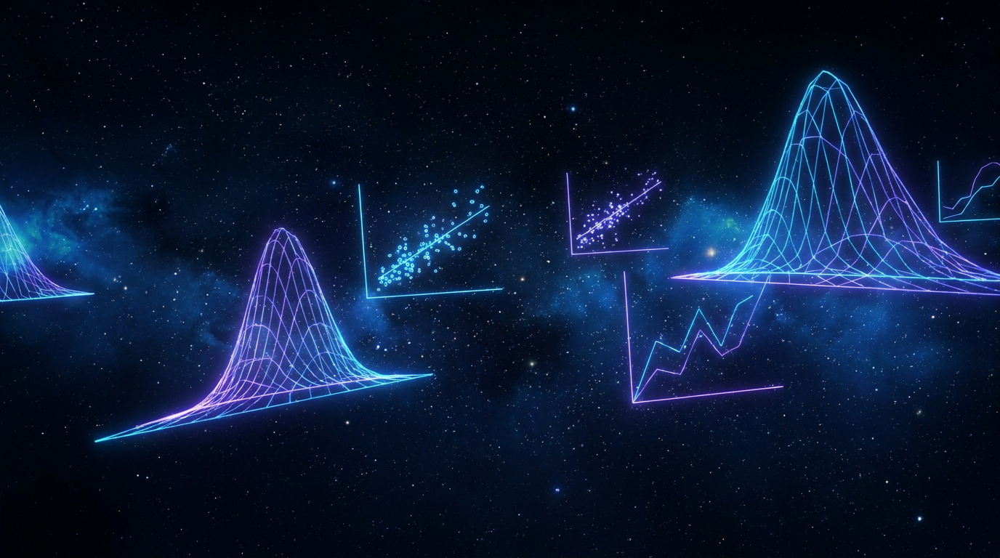

| 分佈 | 類型 | 參數 | 適用情境 | 關鍵公式 |
|---|---|---|---|---|
| 常態分佈 N(μ,σ²) | 連續 | μ, σ² | 自然現象、測量誤差、身高/智商 | 68-95-99.7 法則 |
| 標準常態 Z ~ N(0,1) | 連續 | 無 | Z 檢定、標準化任何常態分佈 | Z = (X−μ)/σ |
| 二項分佈 B(n,p) | 離散 | n, p | n次獨立試驗，成功機率p | E[X] = np, Var = np(1−p) |
| 卜瓦松 Pois(λ) | 離散 | λ | 單位時間/面積事件次數（稀有事件） | E[X] = Var = λ |
| t 分佈 t(df) | 連續 | 自由度 df | 小樣本估計、迴歸係數顯著性 | n−1 自由度，尾巴比 Z 厚 |
| χ² 分佈 χ²(df) | 連續 | 自由度 df | 類別資料適合度檢定、獨立性檢定 | 卡方檢定統計量 |
| F 分佈 F(d₁,d₂) | 連續 | d₁,d₂ | ANOVA、變異數分析、迴歸整體顯著性 | F = (MS_between)/(MS_within) |
| 層次 | 問題 | 代表圖表 |
|---|---|---|
| 描述性 | 發生了什麼？ | 長條圖 / 圓餅圖 / 趨勢線 |
| 診斷性 | 為什麼發生？ | 散佈圖 / 瀑布圖 / 熱力圖 |
| 預測性 | 會發生什麼？ | 迴歸線 / 時間序列預測 |
| 處方性 | 該怎麼做？ | 情境模擬 / 決策樹 / 優化模型 |
| Matplotlib | 底層控制，客製化程度最高，語法繁瑣 |
| Seaborn | 基於 Matplotlib，統計圖表美觀，語法簡潔 |
| Plotly | 互動式圖表，支援 web，支援 R/Python/JS |
| Altair | 宣告式語法，基於 Vega-Lite，簡潔優雅 |
| # | 比較維度 | 選項 A | 選項 B | 必考結論 |
|---|---|---|---|---|
| 1 | 資料型態 | 結構化資料（SQL） | 非結構化資料（NoSQL） | 結構化有固定Schema，NoSQL靈活但查詢複雜 |
| 2 | 數據倉儲 | Kimball（維度模型） | Inmon（正規化模型） | Kimball 面向主題/效能，Inmon 企業整合/一致性 |
| 3 | Hadoop vs Spark | Hadoop MR（磁盤計算） | Spark（記憶體計算） | Spark 比 MR 快 10~100x，適合迭代 ML |
| 4 | 串流處理 | Spark Streaming（微批次） | Flink（真正串流） | Flink 低延遲，Spark 高吞吐各有優勢 |
| 5 | 缺失值 | 均值填補 | KNN 插補 | 均值簡單但不改變分布，KNN 保留局部結構但計算重 |
| 6 | 不平衡處理 | SMOTE 過採樣 | Random Under-sampling | SMOTE 生成合成樣本，欠採樣丢失多數類資訊 |
| 7 | GenAI 文字 | BLEU（精確度導向） | ROUGE（召回導向） | BLEU 看重流暢性，ROUGE 看重覆蓋率，常搭配使用 |
| 8 | 隱私保護 | 差分隱私（DP） | 同態加密（HE） | DP 加入噪聲保護個體，HE 可在加密資料上運算 |
| 9 | 資料漂移 | Covariate Drift | Prior Drift | Covariate 只改輸入分布，Prior Drift 改標籤分布 |
| 10 | 分析層次 | 描述性分析 | 處方性分析 | 描述回答「發生了什麼」，處方回答「該怎麼做」 |
| TP（真陽） | 實際正、預測正 ✅ |
| FP（偽陽） | 實際負、預測正 ❌ |
| TN（真陰） | 實際負、預測負 ✅ |
| FN（偽陰） | 實際正、預測負 ❌ |
| 方法 | 每步樣本 | 速度 | 收斂 |
|---|---|---|---|
| GD（批量） | 全部 n 筆 | 慢 | 穩定 |
| SGD | 1 筆 | 快 | 震盪 |
| Mini-batch | 32~256筆 | 中等 | 平衡 |
| Adam | 自適應 | 快 | 最快 |
| 演算法 | 類型 | 核心原理 | 優點 | 缺點 | 適用情境 |
|---|---|---|---|---|---|
| 線性迴歸 | 迴歸 | 最小化 MSE，找最佳擬合線 | 簡單、解釋性強 | 無法處理非線性 | 連續數值預測 |
| SVM | 分類 | 找最大間隔超平面，支持向量 | 高維有效，核函數處理非線性 | 對大規模數據慢 | 文本分類、圖像分類 |
| 決策樹 | 兩者 | 遞迴分割，資訊增益最大化 | 可解釋、直覺 | 容易過擬合 | 規則提取、特徵重要性 |
| KNN | 分類 | K 個最近鄰居投票 | 簡單、無訓練階段 | 預測慢、高維失效 | 小型數據、基線模型 |
| 樸素貝氏 | 分類 | 貝氏定理 + 條件獨立假設 | 訓練/預測快 | 特徵獨立假設不實際 | 垃圾郵件分類、文本 |
| 架構 | 擅長資料類型 | 核心機制 | 代表作 | 必考重點 |
|---|---|---|---|---|
| MLP | 結構化資料、簡單模式 | 全連接層（FC） | 標準神經網路 | 最基礎，所有架構起點 |
| CNN | 圖像、視訊、任意網格資料 | 卷積層 + 池化層 | ResNet, VGG, EfficientNet | 局部感受野 + 權重共享，大幅減少參數 |
| RNN | 序列資料：文字、時間序列、音訊 | 隱藏狀態循環 | LSTM, GRU | LSTM/GRU 用 Gate 解決梯度消失 |
| Transformer | 幾乎所有任務（SOTA） | Self-Attention + 位置編碼 | BERT, GPT, ViT, CLIP | 並行計算，取代 RNN，支援多模態 |
| GAN | 圖像/音訊生成 | 生成器 vs 判別器對抗 | StyleGAN, DCGAN | 模式崩潰、Wasserstein GAN 改善 |
| Accuracy | (TP+TN)/(TP+TN+FP+FN) |
| Precision | TP/(TP+FP) → 誤殺代價高時 |
| Recall / TPR | TP/(TP+FN) → 漏檢代價高時 |
| F1 Score | 2·P·R/(P+R) → Precision/Recall 平衡 |
| Specificity | TN/(TN+FP) |
| MSE | 平均平方誤差，對大誤差懲罰更大 |
| RMSE | √MSE，與 Y 同單位 |
| MAE | 平均絕對誤差，對離群值不敏感 |
| R² | 決定係數，0~1，越接近1越好 |
| MAPE | 平均絕對百分比誤差，相對誤差 |
| Learning Rate | 最關鍵，決定收斂速度 |
| Epochs / N_estimators | 訓練輪數/樹數 |
| Depth / Layers | 模型複雜度 |
| Dropout Rate | 正則化強度 |
| Batch Size | 記憶體需求與收斂穩定性 |
| λ（L1/L2 係數） | 正則化強度 |
| # | 比較維度 | 選項 A | 選項 B | 必考結論 |
|---|---|---|---|---|
| 1 | 偏差/變異 | 高偏差（欠擬合） | 高變異（過擬合） | 高偏差：Train/Val 都差→複雜化。高變異：Train 好/Val 差→正則化 |
| 2 | 正則化 | L1 Lasso（稀疏） | L2 Ridge（平滑） | L1 使權重歸零（特徵選擇），L2 只收縮不解釋 |
| 3 | 分群 | K-Means（球形簇） | DBSCAN（任意形狀） | K-Means 需預設K，對噪聲敏感；DBSCAN 自適應密度 |
| 4 | 集成 | Bagging（並聯） | Boosting（串聯） | Bagging 減少Variance，Boosting 減少Bias |
| 5 | 深度學習 | CNN（局部特徵） | MLP（全連接） | CNN 用權重共享大幅減少參數，適合網格資料 |
| 6 | 深度學習 | RNN（序列建模） | Transformer（並行） | Transformer 自注意力並行計算，解決 RNN 梯度消失 |
| 7 | 分類指標 | Precision（精確度） | Recall（召回率） | Precision 避免誤殺，Recall 避免漏檢，視情境取捨 |
| 8 | 類別不平衡 | SMOTE 過採樣 | Random欠採樣 | SMOTE 生成合成樣本，欠採樣丢失多數類資訊 |
| 9 | 公平性 | 人口均等 | 機會均等 | 人口均等不看實際結果，機會均等考慮不同基礎率的調整 |
| 10 | 可解釋性 | Interpretability | Explainability | Interpretability 模型內在可理解，Explainability 為黑箱事後解釋 |
| 科目 | 公式名稱 | 公式 | 應用情境 |
|---|---|---|---|
| L21 | Self-Attention | softmax(QKᵀ/√d)·V | Transformer 核心機制 |
| L21 | IoU | Area(Overlap)/Area(Union) | 物件偵測、影像分割 |
| L22 | PSI | Σ (A−E)×ln(A/E) | 資料漂移監控，>0.2 需重訓 |
| L22 | 貝氏定理 | P(A|B)=P(B|A)×P(A)/P(B) | NLP 垃圾郵件分類 |
| L22 | Z 檢定 | Z=(x̄−μ₀)/(σ/√n) | 大樣本平均數檢定 |
| L23 | Precision | TP/(TP+FP) | 誤報代價高時 |
| L23 | Recall | TP/(TP+FN) | 漏檢代價高時 |
| L23 | F1 Score | 2·P·R/(P+R) | 不平衡數據，P/R 平衡 |
| L23 | MSE | (1/n)Σ(ŷᵢ−yᵢ)² | 迴歸任務，最常用 |
| L23 | 偏差-變異數 | Total=Bias²+Variance+Noise | 診斷過擬合/欠擬合 |
| L23 | L2 正則化 | Loss₀+λ·Σwᵢ² | 防止過擬合，平滑權重 |
| L23 | 梯度下降 | w := w − α·∇L(w) | 所有深度學習優化基礎 |
| # | 主題 | A | B | 結論 | 科 |
|---|---|---|---|---|---|
| 1 | 詞向量 | Word2Vec | BERT | 靜態 vs 動態上下文 | L21 |
| 2 | Transformer | Encoder | Decoder | 雙向理解 vs 單向生成 | L21 |
| 3 | 物件偵測 | YOLO | Faster R-CNN | 即時 vs 精確 | L21 |
| 4 | 生成模型 | GAN | Diffusion | 訓練不穩定 vs 穩定高品質 | L21 |
| 5 | 部署架構 | Docker | Kubernetes | 單機隔離 vs 自動化編排 | L21 |
| 6 | 資料漂移 | Covariate | Concept | 輸入分布 vs 關係改變 | L22 |
| 7 | Hadoop vs Spark | Hadoop MR | Spark | 磁盤 vs 記憶體計算，快100x | L22 |
| 8 | 不平衡處理 | SMOTE | 欠採樣 | 生成 vs 刪除樣本 | L22 |
| 9 | 隱私技術 | 差分隱私 | 同態加密 | 加噪聲 vs 加密運算 | L22 |
| 10 | GenAI 指標 | BLEU | ROUGE | 精確度 vs 召回導向 | L22 |
| 11 | 正則化 | L1 Lasso | L2 Ridge | 稀疏（歸零）vs 平滑 | L23 |
| 12 | 分群 | K-Means | DBSCAN | 需預設K/球形 vs 自適應密度 | L23 |
| 13 | 集成學習 | Bagging | Boosting | 並聯(減Variance) vs 串聯(減Bias) | L23 |
| 14 | 深度學習 | CNN | Transformer | 局部 vs 全域注意力 | L23 |
| 15 | 公平性 | 人口均等 | 機會均等 | 只看預測 vs 考慮基礎率 | L23 |
52 頁精華 · 3 大科目 · 全面覆蓋
iPAS AI 應用規劃師中級 2026 版